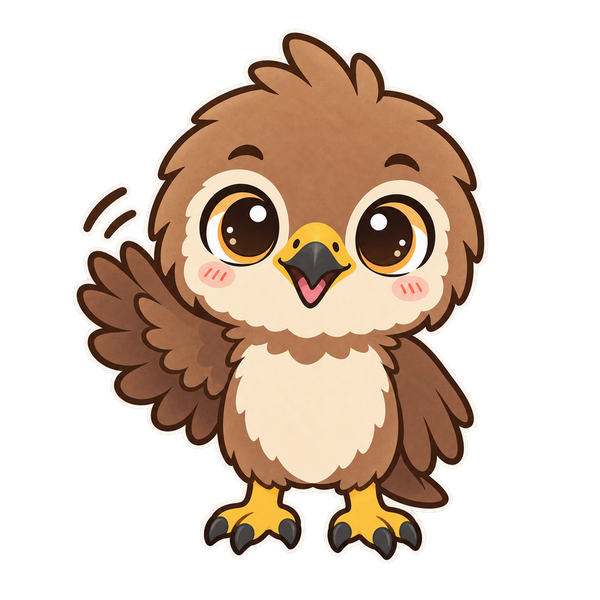

小鳶合照館
按「拍照」會打開手機的相機，放大縮小、換鏡頭都跟平常一樣；拍好回來再放小鳶、鯨鯊和相框。
原型 ：暫用貼紙與相框。照片只在這支手機上合成，不會上傳；換手機就沒有。點下面的貼紙放上來
1080 × 1440。照片只在這支手機，沒有上傳。

按「拍照」會打開手機的相機，放大縮小、換鏡頭都跟平常一樣；拍好回來再放小鳶、鯨鯊和相框。
原型 ：暫用貼紙與相框。照片只在這支手機上合成，不會上傳；換手機就沒有。1080 × 1440。照片只在這支手機，沒有上傳。